We now introduce how to create virtual machines (VMs) on Microsoft Azure. Once the machines are created, you may follow [note for deployment] to set up the cluster environment for running G-thinker.
Here, we show how to create a virtual machine with hostname master on Azure. Go to your Azure portal:
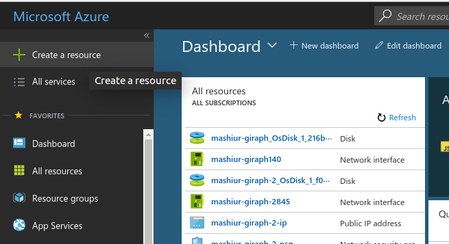
Click "Create a resource" as shown above.

Type "centos" in the search bar.
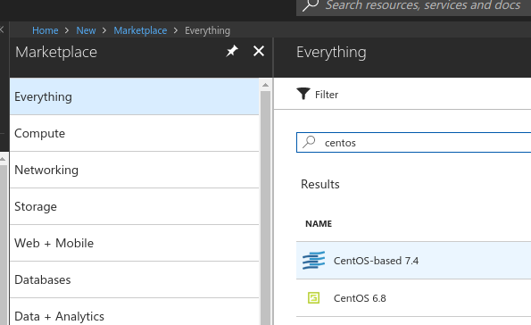
Select "CentOS-based 7.4" in the search results shown above.
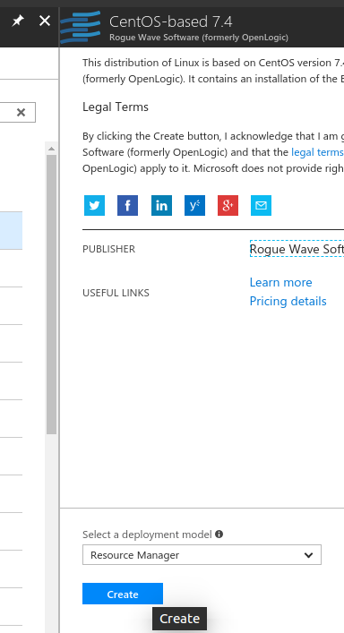
Press the [Create] button shown above.
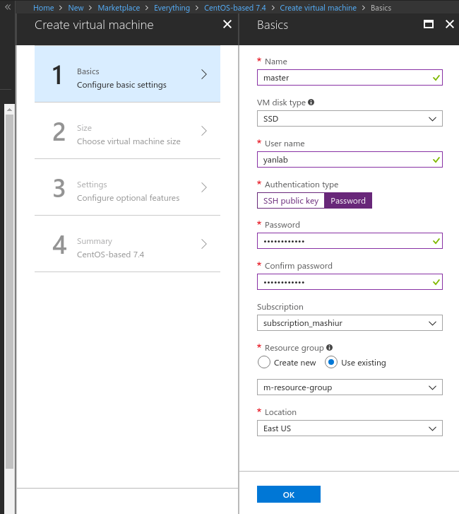
As shown in the figure above, in Step 1, we set our machine's hostname as master, user name as yanlab, authentication type as Password and provide the password for user yanlab. Make sure that all your VMs to be included in a cluster are using the same existing "resource group". Press button [OK] when done.
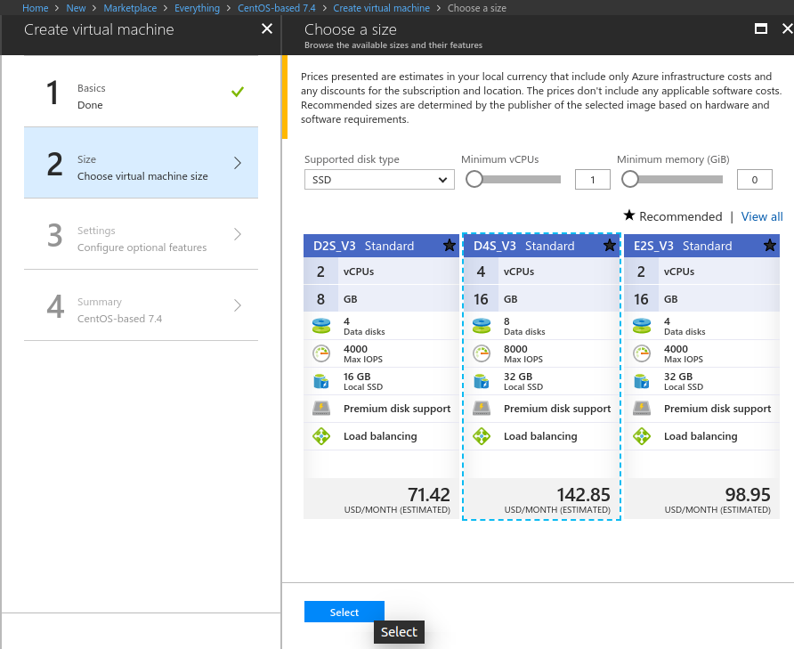
In Step 2, choose a VM model you want to create, and then click the [Select] button.
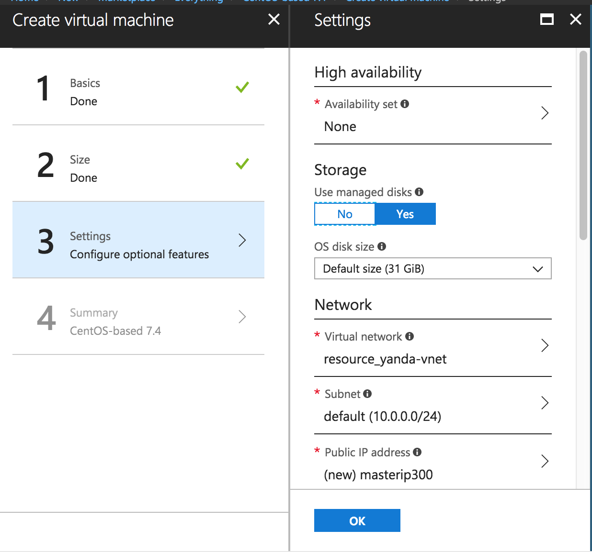
In Step 3, choose to use "managed disks" for your VM. There is a default OS disk of size 31 GB (/dev/sda), and we will add and mount a data disk later. Then click the [OK] button.

Click the [Create] button for Step 4, and the VM will start its creation. It will take a while, but you can create other VMs in the meanwhile. After the VM is ready, you can click it in the Dashboard:
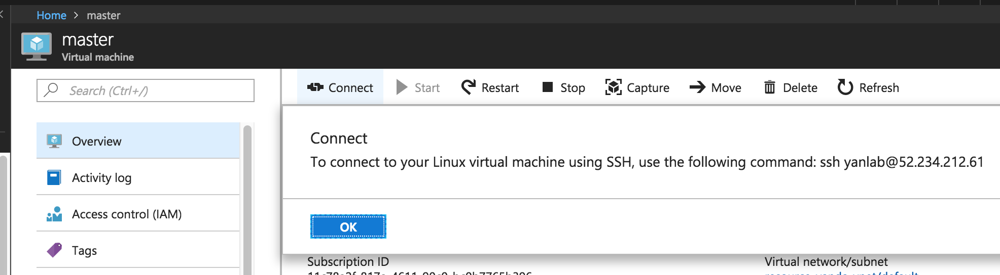
Click the [Connect] button in the prompted window as shown above, and you will get the command to connect through terminal (e.g., ssh yanlab@52.234.212.61 in the figure above).
When you deploy your cluster, please use the internal IP address obtained from ifconfig (e.g., 10.0.0.11) rather than the public IP address of your VM (e.g., 52.234.212.61) in /etc/hosts.
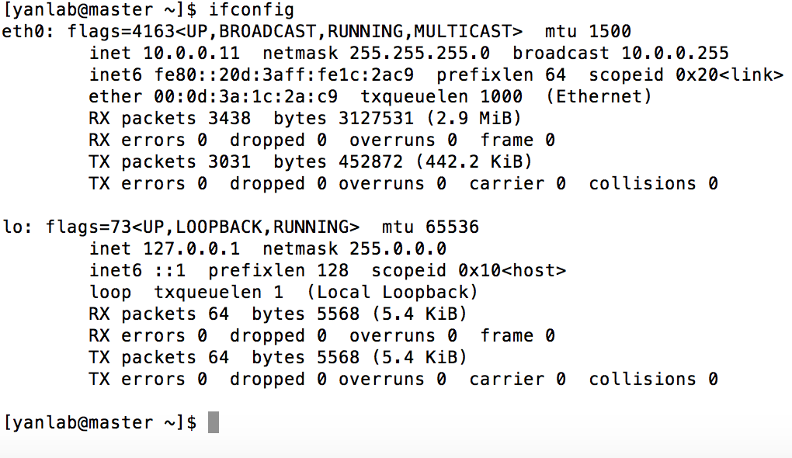
Now, click master in the Azure Portal Dashboard, and add a disk of size 512GB.
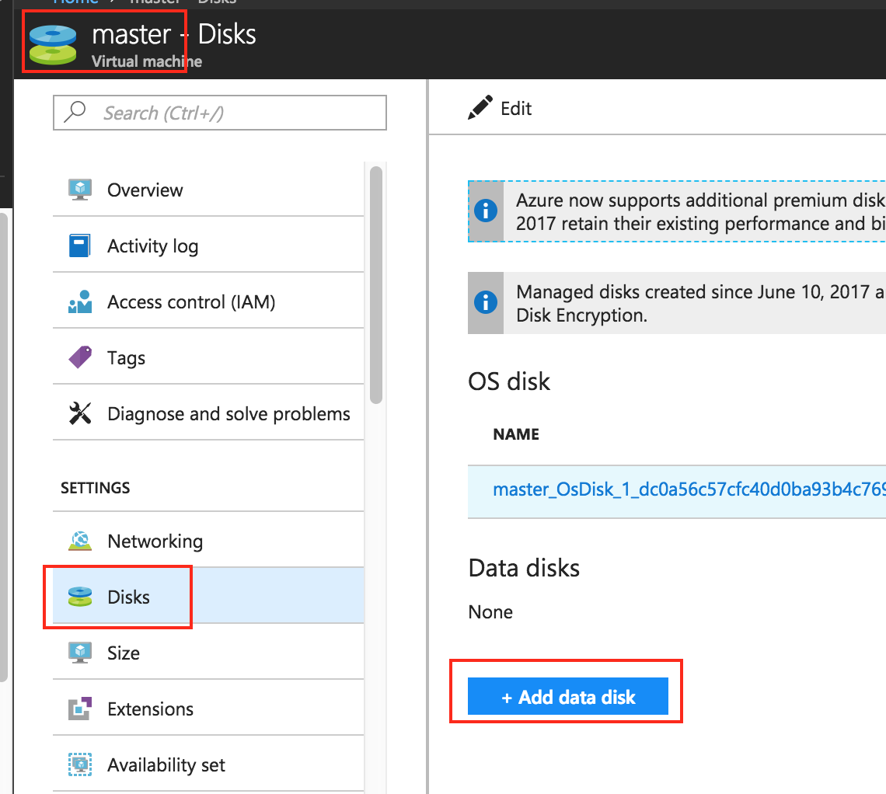
Click [Save] to confirm.
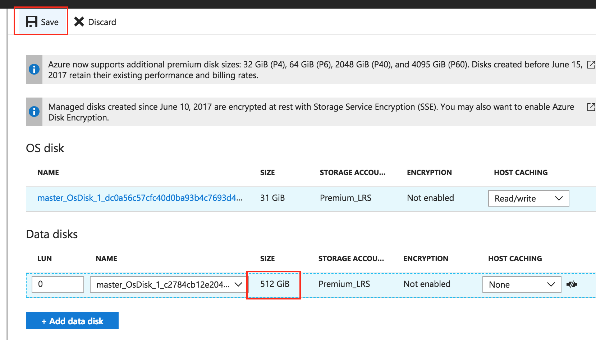
Now in the terminal where you already ssh-ed to master, run df -h and you cannot find that disk yet.
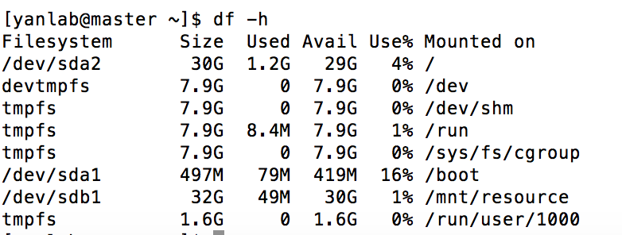
We mount the disk as follows. First, run sudo fdisk -l and we see that /dev/sdc contains the added 500GB disk space:
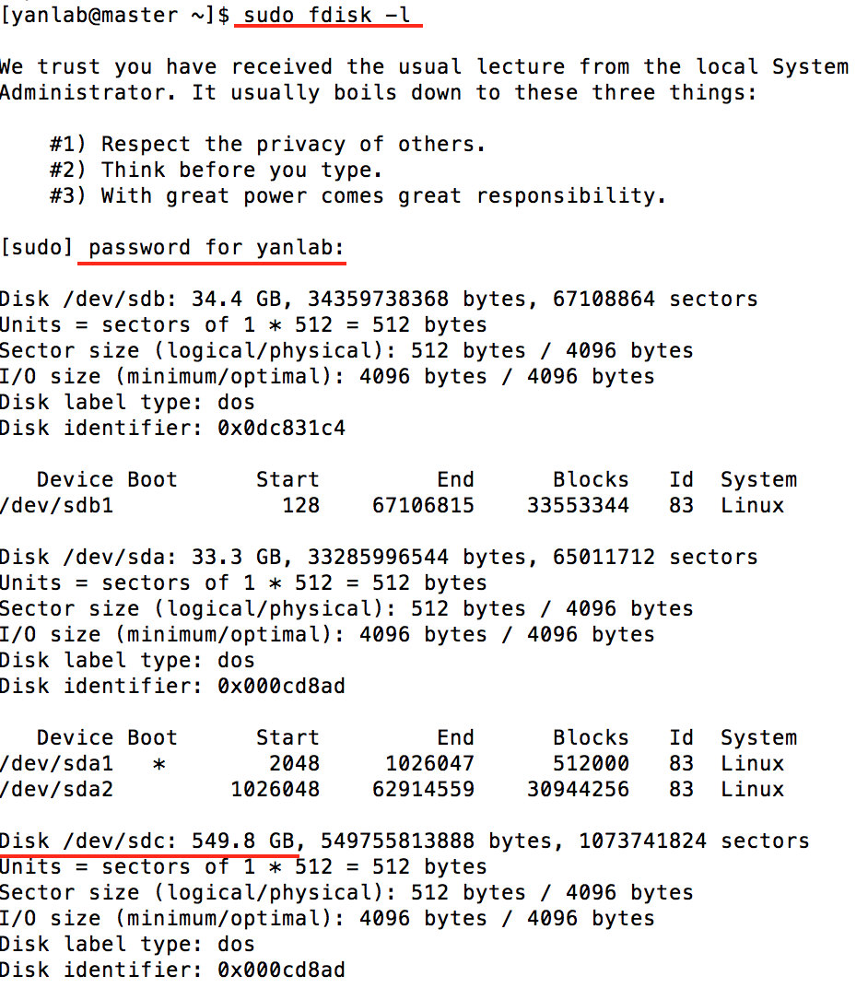
We now partition /dev/sdc by running sudo fdisk /dev/sdc. You may delete all existing partitions using "d" first.
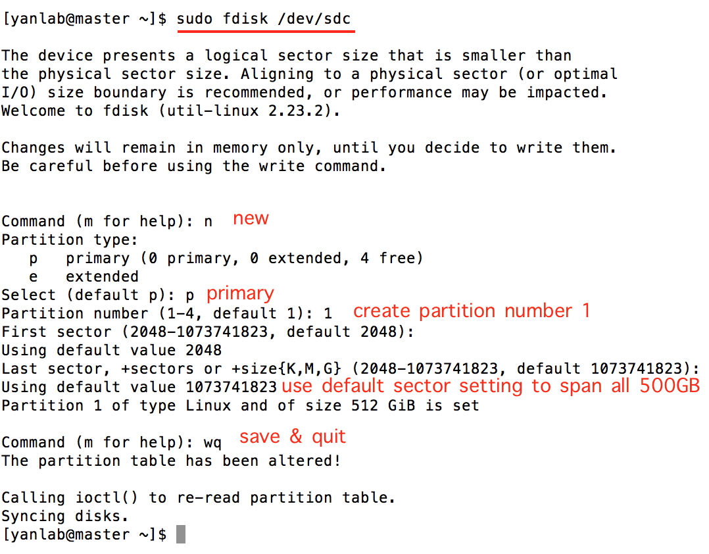
In this way, we created /dev/sdc1 to span all 500GB disk space:
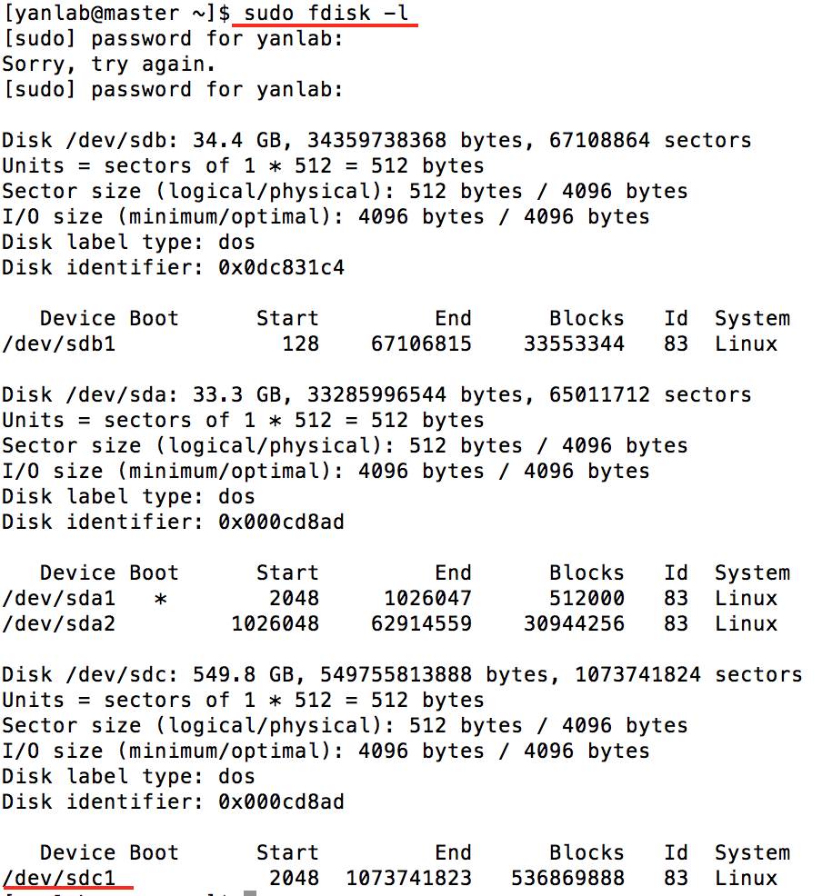
Format /dev/sdc1 by running: sudo mkfs.xfs /dev/sdc1. Create a new folder to mount it:
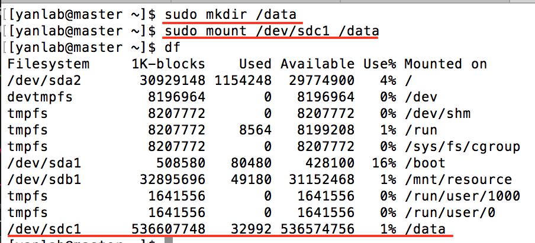
Finally, you may let users access it by running sudo chmod 777 /data.